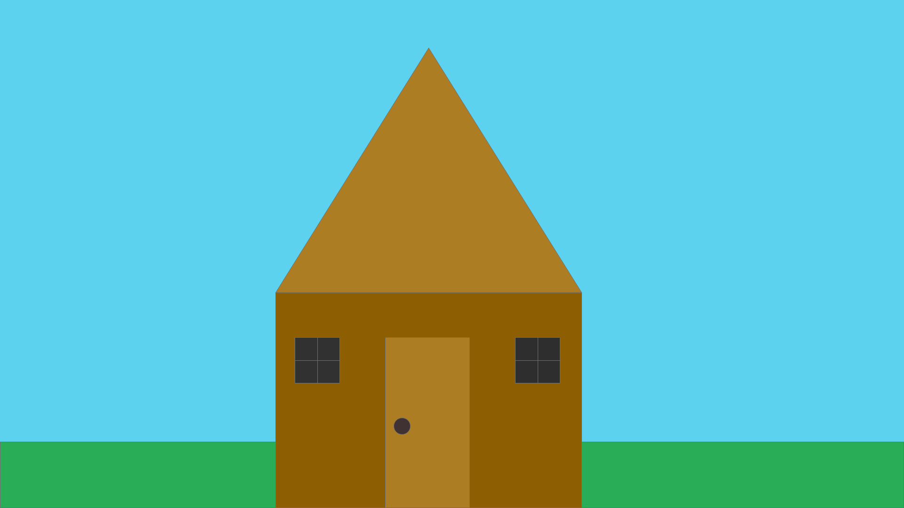

1.open XD
2.create a document that has a widith of 1920 and a heigth of 1080
3.make the background color #5CD2EF by double clicking on the backgroup and presssing fill
4.click on the squre icon and make a rectangle on the bottom of the screen with these measurements: width 1920 , height 141 and x 939
5.make the rectangle you just created the color #29AD57 by double clicking the rectangle and pressing fill
6.click on the square icon and make a square in the middle of the document with these measurements : width 651 , height 458 , x 585 and y 622
7. make the squre you just created the color #8E5E02 by double clicking the square and pressing fill
8.click on the triangle icon and create a triangle about the square with these measurements : width 651 , height 521 , x 585 and y 101
9.make the triangle you just created the color #AC7D23
10.click on the sqaure icon and create a square with these measurements: width 96 , height 98 , x 626 and y 717
11.make the square you just created the color #2F2E2E
12. copy and paste the square you just created . adjust the measurements for the duplicated square to : width 96 , height 98 , x 1094 and y 717
13.create lines for the left square you creatd by clicking on the line icon and create a line with the measurements of : width 96 , height 0 , x 626.5 and y 766.5
14. create anothr line by repeating step 13 and change the measurements to : width 0 , height 98 , x 674.5 and y 717.5
15.copy both lines you created adn pasted them , place them in the squre to the right .
16.create a rectangle with these measurements :width 180 , height 363 , x 818 and y 717.
17. make the retangle you just created the color #AC7D23
18. create a circle and make the measurements: width 36 , height 36 , x 836 and y 888.
19.make the circle the color #403232
20.Export as a png
21.send to afreem3@masonlive.gmu.edu
